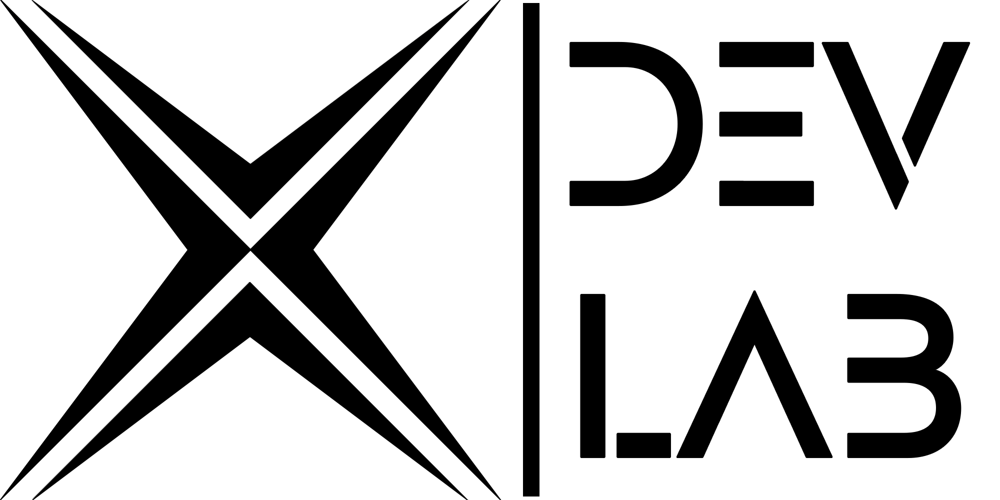

Toca el botón ¡Iniciar! Activa tu cámara, interactúa con la pantalla y vive la experiencia de realidad aumentada.
XDevLab | Copyright © 2026 Niantic Spatial, Inc. El uso del motor XR está sujeto a la licencia del motor XR.